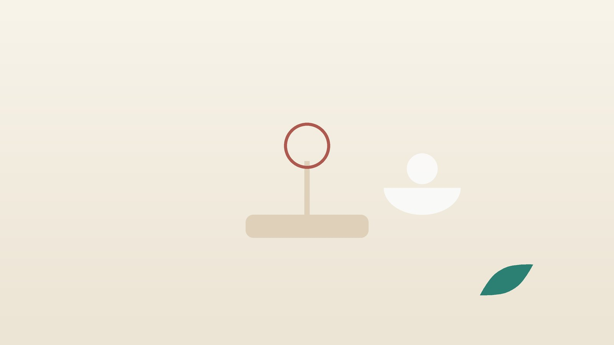

먹어도 살이 안 찐다면, 마른 체질 체중 관리 한방 관리

나도 살이 안 찌는 체질일까요?
- BMI를 계산하면 18.5가 되지 않는다
- 조금만 먹어도 배가 불러 한 끼 양을 다 못 먹는다
- 먹고 나면 더부룩하거나 금방 화장실에 간다
- 계단을 오르면 다리가 후들거리고 쉽게 지친다
- 추위를 많이 타고 손발이 늘 차다
- 살찌우려고 많이 먹으면 오히려 배탈이 난다
이 체크리스트는 진단 도구가 아닙니다. 의도하지 않았는데 체중이 줄고 있다면 먼저 내과 검사를 받으세요.
왜 먹어도 살이 붙지 않을까요?
대한비만학회 진료지침은 세계보건기구 기준처럼 BMI 18.5 미만을 저체중으로 분류합니다. 저체중은 면역력 저하, 골밀도 감소, 월경 불순, 근감소와 이어질 수 있습니다.
- 타고난 체격: 부모 형제도 마른 편이고 어릴 때부터 체중 변화가 적습니다.
- 적게 먹는 것을 모름: 하루 동안 먹은 것을 적어 보면 생각보다 열량과 단백질이 모자란 경우가 많습니다.
- 소화·흡수 문제: 위가 쉽게 차고 장이 예민해 먹은 양만큼 몸에 남지 않습니다.
- 근육 부족: 근육이 적으면 체중도 적게 나가고, 먹은 에너지를 저장할 자리가 줄어듭니다.
- 숨은 병: 갑상선기능항진증, 당뇨, 염증성 장질환, 셀리악병 같은 흡수 장애, 결핵 같은 만성 감염이 체중을 끌어내립니다.
살찌우기보다 검사가 먼저인 신호
- 6개월~1년 사이에 원래 체중의 5% 넘게 저절로 빠졌다
- 가슴이 두근거리고 손이 떨리며 땀이 많고 더위를 못 견딘다 (갑상선기능항진증 의심)
- 물을 많이 마시고 소변이 잦으며 살이 빠진다 (당뇨 의심)
- 설사가 몇 주째 이어지거나 변에 피가 섞이고 배가 자주 아프다
- 밤에 땀을 흠뻑 흘리거나 기침·미열이 오래간다
- 체중이 늘까 봐 몹시 두렵고, 먹은 뒤 일부러 토하거나 굶는다
위 신호가 있으면 내과(내분비내과·소화기내과)에서 혈액 검사와 내시경 등을 먼저 받으세요. 마지막 항목처럼 먹는 것 자체가 괴롭다면 섭식장애일 수 있어 정신건강의학과 진료가 필요합니다. 아무것도 즐겁지 않아 입맛을 잃었다면 우울도 살펴야 합니다. 증상이 가벼운 경우 한약 치료를 중심으로 관리하기도 하지만, 증상이 깊으면 정신건강의학과 치료를 함께 받으세요.
한의학은 마른 체질을 어떻게 보나요?
한의학에서는 지나치게 여윈 상태를 수척(瘦瘠)이라 하고, 음식을 받아들이는 위(胃)와 그것을 기운과 살로 바꿔 온몸에 보내는 비(脾)의 힘에서 원인을 찾았습니다. 비는 살(肌肉)을 주관한다고 하여, 비위가 약하면 먹어도 살로 가지 않는다고 보았습니다.
반대로 많이 먹는데도 마르는 사람은 위에 열이 있어 음식이 빨리 타 버린다고 보았고, 걱정과 긴장이 많은 사람은 기운이 소모되어 살이 빠진다고 설명합니다.
나의 마른 체질은 어떤 유형일까?
검사에서 원인 질환이 없을 때 쓰는 한의학적 구분입니다.
1. 비위허약(脾胃虛弱) 작게 먹고 지치는 유형
- 이런 분에게 많아요
- 입이 짧고 원래 소식하는 분
- 나타나는 모습
- 몇 숟가락이면 배가 차고 식후 졸리며 기운이 없다
- 함께 오는 몸의 신호
- 묽은 변, 얼굴빛이 누렇고 손발이 참
- 진찰에서 보이는 모습
- 배가 말랑하고 혀가 연하며 잇자국이 있음
- 치료 방향
- 비위를 데우고 북돋아 소화 흡수를 돕는 방향 (삼령백출산·향사육군자탕 계열)
- 오늘부터 해 볼 것
- 한 번에 많이 먹기보다 하루 다섯 번으로 나눠 드세요.
2. 위열(胃熱) 많이 먹어도 빠지는 유형
- 이런 분에게 많아요
- 잘 먹고 물을 자주 찾는 분
- 나타나는 모습
- 배가 금방 고프고 많이 먹는데도 살이 안 붙는다
- 함께 오는 몸의 신호
- 입 냄새, 입마름, 변이 딱딱함
- 진찰에서 보이는 모습
- 혀가 붉고 누런 태
- 치료 방향
- 위의 열을 식히고 진액을 보태는 방향 (옥녀전·맥문동탕 계열)
- 오늘부터 해 볼 것
- 먼저 갑상선과 혈당 검사를 꼭 받아 보세요.
3. 간비불화(肝脾不和) 신경 쓰면 체하는 유형
- 이런 분에게 많아요
- 스트레스를 받으면 입맛부터 잃는 분
- 나타나는 모습
- 긴장하면 밥이 안 넘어가고 배가 아프거나 설사한다
- 함께 오는 몸의 신호
- 옆구리 결림, 한숨, 잠이 얕음
- 진찰에서 보이는 모습
- 혀 옆이 붉고 맥이 줄처럼 당김
- 치료 방향
- 막힌 기운을 풀어 위장이 편히 움직이게 하는 방향 (소요산·시호소간산 계열)
- 오늘부터 해 볼 것
- 식사 시간만큼은 휴대전화를 내려놓고 천천히 씹어 드세요.
4. 기혈양허(氣血兩虛) 앓고 나서 못 회복한 유형
- 이런 분에게 많아요
- 큰 병이나 출산, 수술 뒤 살이 빠진 분
- 나타나는 모습
- 체중이 돌아오지 않고 어지럽고 숨이 찬다
- 함께 오는 몸의 신호
- 창백한 얼굴, 가슴 두근거림, 잦은 감기
- 진찰에서 보이는 모습
- 맥이 가늘고 약하며 혀가 엷음
- 치료 방향
- 기와 혈을 함께 보태 회복을 돕는 방향 (십전대보탕·귀비탕 계열)
- 오늘부터 해 볼 것
- 무리한 운동보다 가벼운 걷기부터 시작하세요.
한의원에서는 어떻게 진찰하나요?
- 체성분 검사: 몸무게만이 아니라 근육량과 체지방량을 나눠 보고, 무엇을 늘릴지 정합니다.
- 체중 변화와 검사 결과: 언제부터 얼마나 빠졌는지, 건강검진·혈액 검사 결과를 확인하고 필요하면 내과 검사를 먼저 안내합니다.
- 식사 기록: 2~3일 동안 먹은 것을 사진으로 남겨 오세요.
- 배와 맥·혀: 배의 냉온과 긴장, 대변 상태, 맥과 혀를 살피고, 드시는 약은 알려 주시면 확인해 처방합니다.
침·약침·한약 치료는 어떻게 하나요?
1. 침 치료
- 족삼리(足三里): 무릎 바깥 아래 오목한 곳에서 손가락 네 개 너비 아래, 정강이뼈 바깥쪽입니다. 위장의 움직임을 도울 때 대표로 쓰는 혈입니다.
- 중완(中脘): 배꼽과 명치 끝 사이의 한가운데입니다.
- 비수(脾兪): 열한 번째 등뼈 아래에서 양옆으로 손가락 두 개 너비입니다.
- 공손(公孫): 엄지발가락 쪽 발 안쪽, 발등뼈 뿌리 아래 오목한 곳입니다.
2. 약침·온열 요법
소화가 늘 더디고 배가 찬 분은 배와 등의 비위 관련 혈에 약침을 시행하고, 아랫배와 명치를 데우는 온열 요법을 함께 합니다. 임신 중이라면 주수와 상태를 확인한 뒤 피해야 할 부위를 제외하고 시행합니다.
3. 한약
살을 억지로 찌우는 약이 아니라, 소화 흡수를 도와 먹은 것이 몸에 남도록 하는 방향으로 유형에 맞춘 탕약을 씁니다. 입맛이 돌고 한 끼 양이 늘면서 운동한 만큼 근육이 붙도록 돕는 것이 목표이며, 몇 kg이 는다는 약속은 드리지 않습니다. 임신 중이거나 갑상선·간·신장 질환 병력이 있다면 진료 때 꼭 알려 주세요. 확인 후 안전한 약재로 처방합니다. 한약은 원장이 원내 탕전실에서 약재 선별부터 달이는 과정까지 직접 관리하며, 10일분씩 처방해 복용 경과를 보고 약재 구성과 양을 조절합니다.
원장님이 네이버 블로그에 진료 이야기와 건강 정보를 꾸준히 올리고 있습니다. 더 많은 이야기는 블로그에서 확인해 보세요.
블로그 보기관리는 어떤 순서로 진행되나요?
- 원인 확인 체중 변화와 신호를 보고 필요하면 내과 검사를 먼저 받습니다.
- 첫 진료 체성분 검사와 식사 기록으로 유형과 목표를 정합니다.
- 소화부터 한약과 침으로 더부룩함과 묽은 변을 줄여 먹는 양을 늘립니다.
- 근육 붙이기 근력운동을 더하고, 체성분을 다시 재어 근육량 변화를 비교합니다.
체중과 근육이 늘어나는 속도는 사람마다 다르며 진찰 후 개인별로 안내합니다.
살이 붙는 몸을 만드는 생활 관리
- 하루 다섯 끼: 세끼 사이에 오전·오후 간식을 넣어 식사 횟수를 늘립니다. 바나나, 우유, 삶은 달걀이면 충분합니다.
- 끼니마다 단백질: 살코기, 생선, 달걀, 두부, 콩을 손바닥 크기만큼 매 끼니 곁들입니다.
- 근력운동: 스쿼트, 팔굽혀펴기, 밴드 운동을 일주일에 2~3번 합니다.
- 식사 전후 물 조절: 식사 직전과 도중에 물을 많이 마시면 금방 배가 차니 식후 30분 뒤에 마십니다.
- 족삼리 누르기: 식후에 족삼리를 엄지로 5초씩 열 번 눌러 주세요.
다른 진료가 함께 필요한 경우
- 떨림·두근거림·더위 탐이 있으면 내분비내과에서 갑상선 기능 검사를 받으세요.
- 갈증과 잦은 소변이 있으면 혈당 검사를 받아 보세요. 당뇨약을 드시는 분은 담당 의사와 상의 없이 끊지 마세요.
- 설사·혈변·복통이 이어지면 소화기내과에서 내시경으로 장을 확인하세요.
- 체중에 대한 두려움이 크거나 먹고 토하는 일이 있으면 정신건강의학과 진료를 받으세요.
- 월경이 몇 달째 끊겼다면 체중 문제와 함께 산부인과 진료를 받아 보세요.
자주 묻는 질문 Q&A
- Q1. BMI는 어떻게 계산하나요?
- 몸무게(kg)를 키(m)의 제곱으로 나눕니다. 키 160cm, 45kg이면 45÷(1.6×1.6)로 약 17.6입니다.
- Q2. 밤에 라면이나 과자를 많이 먹으면 살이 찌지 않을까요?
- 체중은 늘 수 있지만 대부분 지방으로 붙고 위장이 더 지칩니다. 끼니를 나눠 단백질을 챙기는 편이 낫습니다.
- Q3. 단백질 보충제를 먹어도 되나요?
- 식사로 모자랄 때 보조로 쓸 수 있습니다. 신장 질환이 있다면 진료 때 꼭 알려 주세요.
- Q4. 운동하면 살이 더 빠지지 않나요?
- 유산소만 많이 하면 그럴 수 있어, 근력운동 위주로 하고 운동한 날 더 드세요.
- Q5. 한약을 먹으면 입맛이 생기나요?
- 소화가 원인인 분은 더부룩함이 줄며 입맛이 도는 경우가 많지만 사람마다 다릅니다.
- Q6. 갑상선 약을 먹고 있는데 한약을 같이 먹어도 되나요?
- 드시는 갑상선 약 이름과 용량을 알려 주시면 확인해 처방합니다. 갑상선 약은 담당 의사와 상의 없이 끊지 마세요.
- Q7. 얼마나 치료해야 하나요?
- 소화 상태와 목표에 따라 다르며, 체성분 변화를 보며 기간을 정합니다.
- Q8. 원래 마른 체질이면 굳이 살을 찌워야 하나요?
- 불편이 없고 검사가 정상이면 괜찮습니다. 쉽게 지친다면 근육을 늘려 보세요.
문원열 대표원장한의사 · 365스마일한의원
임상 경력 15년, 인천 서구 가정동에서 개원 후 10년째 진료하고 있으며, FCST 턱관절학회·연부조직학회·침도학회 등에서 활동합니다. 아픈 곳만이 아니라 증상의 원인을 찾아 진료합니다.
진료 안내
- 진료시간
- 평일 09:00~20:00 (점심시간 13:00~14:00, 접수 마감 19:30)
토·일·공휴일 09:00~15:00 (접수 마감 14:30) - 주소
- 인천광역시 서구 가경주로 46, 2층 (가정동)
인천2호선 가정중앙시장역 인근
영상으로 길 안내 보기 → - 주차
- 한의원 건물 바로 앞 1층 도원주차장
- 예약
- 예약 바로가기 또는 전화 예약
진료시간은 사정에 따라 바뀔 수 있으니 방문 전 전화로 확인해 주세요.
함께 읽으면 좋은 칼럼
건강 칼럼 전체 보기 →


참고 자료
- 대한비만학회, 비만 진료지침 (2022)
- World Health Organization. Body mass index (BMI) classification
- 질병관리청 국가건강정보포털 — 원문
※ 이 글은 일반적인 건강 정보이며, 개인의 상태에 따라 치료 방법과 결과는 다를 수 있습니다. 정확한 진단과 치료는 진료를 통해 결정됩니다. 침·약침 시술 후 드물게 멍, 통증 등이 생길 수 있습니다.